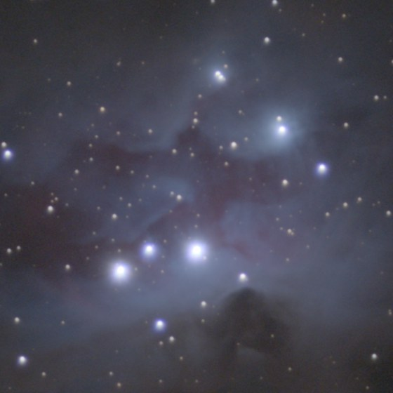
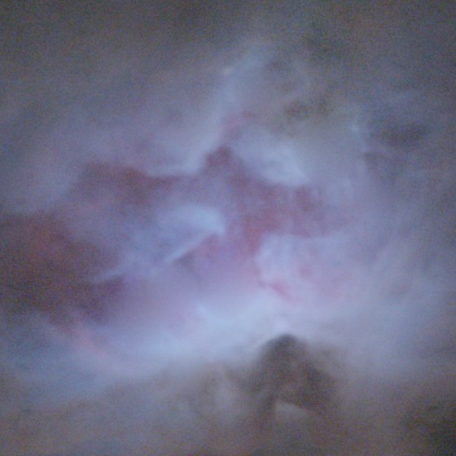
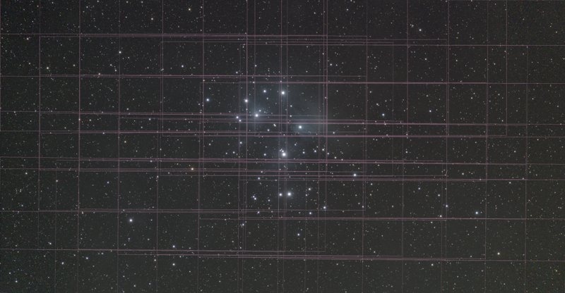
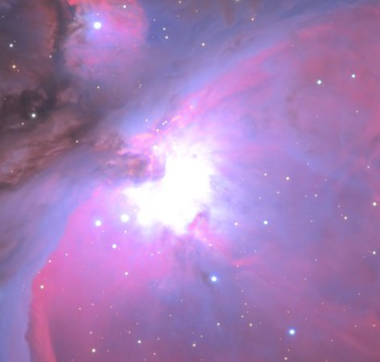
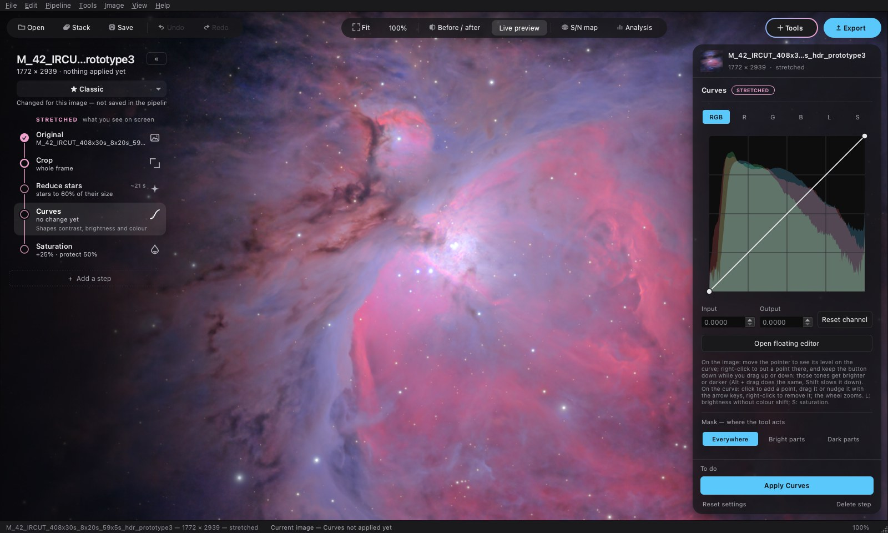
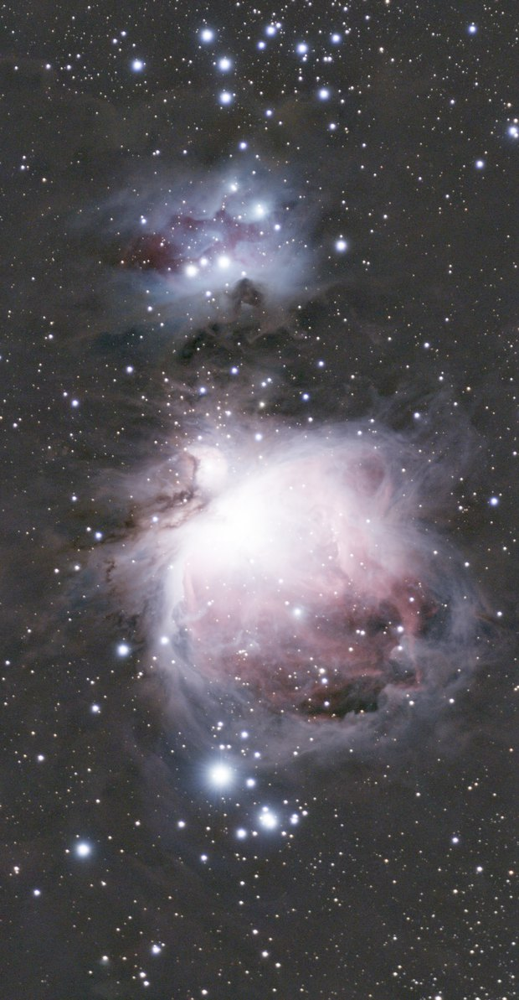
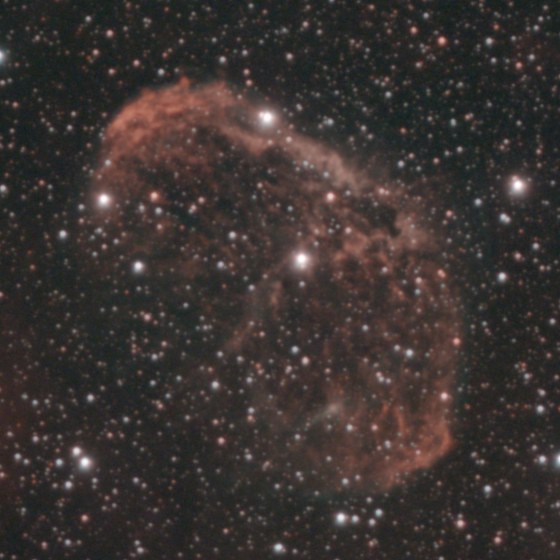

Astrophotography software · free · macOS, Windows, Linux
Stacking and processing
of deep-sky images.
Colour, dual-band and monochrome subs, mosaics, processing of the linear then stretched image, measurement of the stack: in one application.
NGC 6960 · Veil Nebula · Seestar S50 Pro · processed in COSMO
Supported equipment
- Seestarraw subs, field rotation of alt-azimuth mounts, mosaics
- DwarfDraco files with their HO and SO layers, numbered mosaics
- Colour cameraraw FITS, bias, darks, flats, several nights
- Mono camera newfilter wheel: L, R, G, B, Hα, OIII, SII
- Existing stacksFITS, TIFF, XISF (PixInsight), masters included
Features
What COSMO does.
On hover, the thumbnails turn from before to after. A click opens the tool's page.
Colour, dual-band and mono stacking
The subs of a filter wheel are stacked in one go, each filter with its own calibration and the same share of best subs. The filters open together and are mixed into LRGB, HαLRGB or SHO; the SHO workshop keeps the natural colours of the stars. Colour sensors and dual-band stacks go through the same window.


COSMOStarsCOSMO engine
Three networks trained for COSMO, included in the application.
Progress estimated by the author, updated with each version.

Mosaics
Panels stacked on their own then joined: matched backgrounds, shared vignetting removed, distortion of the optics taken into account.

 HDR
HDR
Long and short subs
Above the saturation level measured on the long subs, the short subs take over.

 combined
combined
Comets
The comet is found by its motion, followed even when slow: comet and stars both sharp, and the animation.

 Fire & Ice
Fire & Ice
Dual-band and palettes
Hα and OIII in COSMO Fire & Ice, HOO or SHO, with the natural colours of the stars.

Step by step or in one click
Each step previewed, applied, adjustable at any time. One click runs the remaining steps of a pipeline.


GaiaGaia DR3
Colours calibrated on the catalogue, without plate solving. The Lab places the stars of the field in 3D at their distances.

Measuring the stack
FWHM and eccentricity across the field, with the optical diagnosis; limiting magnitude from Gaia. Signal-to-noise map and the extra exposure needed, region by region.
The processing tools
Linear image
- LRGB mix
- SHO mix
- Crop
- Background
- Colour calibration
- Sharpen
- Denoise
- Stretch
Stretched image
- Curves
- Saturation
- Temperature
- Remove green
- Hα boost
- Narrowband palette
- HDR multiscale
- Dark structures
- Faint nebulosity
- Local contrast
- Details
Stars
- Stars
- Star colours
- Remove halo
- Recombine
Before / after
Five tools, same stacks.
Default settings. Drag across the image to compare.


beforeCOSMOSharpImages processed in COSMO
Seestar S50 Pro. A click enlarges the image and lists the tools used, external engines included.
Download · free
COSMO 0.11.0
The application and the three COSMO networks. GraXpert, StarNet and the RC-Astro tools stay optional, used from your own installation.
First launch and SHA-256 checksums →Getting started →What's new →
By downloading, you accept the licence: free to use; no redistribution, no use of the networks outside the application.